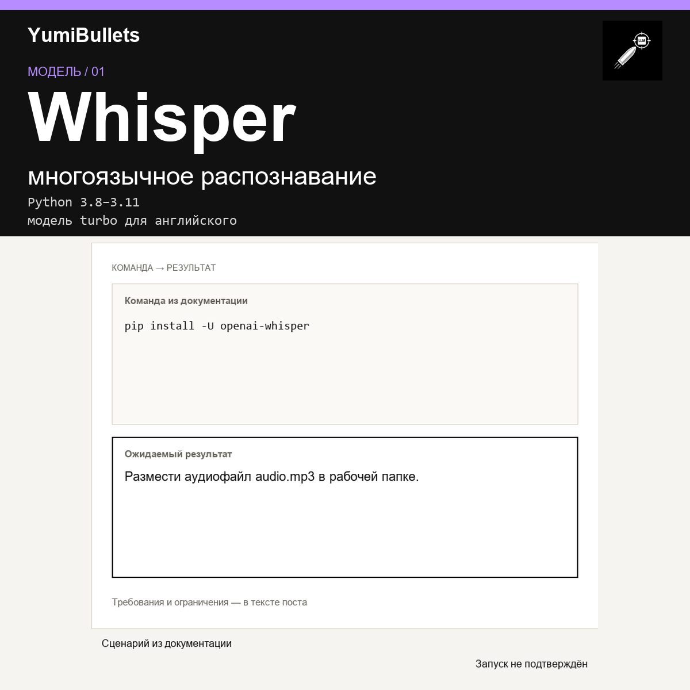

Whisper: распознавание речи из аудио через Python
Есть аудиофайл с речью — нужно получить текст программно. Whisper загружает модель и вызывает transcribe на файле за три строки.

Есть аудиофайл с речью — нужно получить текст программно. Whisper загружает модель и вызывает transcribe на файле за три строки.